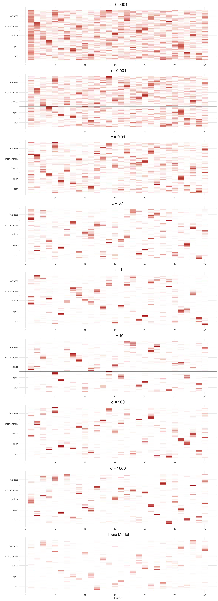
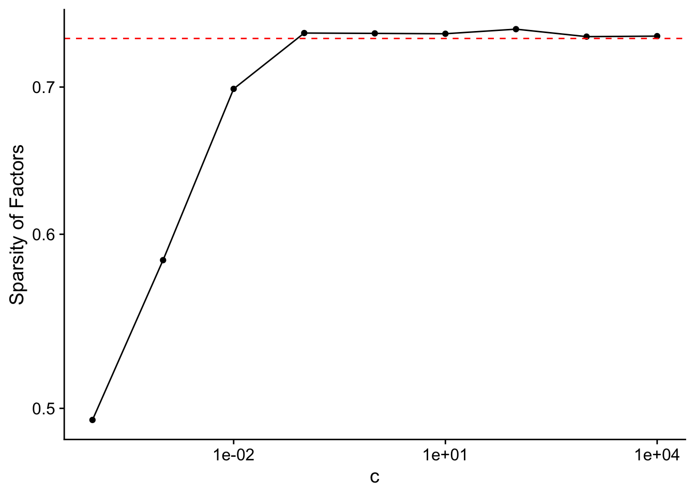

BBC Article Analysis
2024-11-09
Last updated: 2024-11-14
Checks: 6 1
Knit directory: log1p_experiments/
This reproducible R Markdown analysis was created with workflowr (version 1.7.1). The Checks tab describes the reproducibility checks that were applied when the results were created. The Past versions tab lists the development history.
The R Markdown file has unstaged changes. To know which version of
the R Markdown file created these results, you’ll want to first commit
it to the Git repo. If you’re still working on the analysis, you can
ignore this warning. When you’re finished, you can run
wflow_publish to commit the R Markdown file and build the
HTML.
Great job! The global environment was empty. Objects defined in the global environment can affect the analysis in your R Markdown file in unknown ways. For reproduciblity it’s best to always run the code in an empty environment.
The command set.seed(20240402) was run prior to running
the code in the R Markdown file. Setting a seed ensures that any results
that rely on randomness, e.g. subsampling or permutations, are
reproducible.
Great job! Recording the operating system, R version, and package versions is critical for reproducibility.
Nice! There were no cached chunks for this analysis, so you can be confident that you successfully produced the results during this run.
Great job! Using relative paths to the files within your workflowr project makes it easier to run your code on other machines.
Great! You are using Git for version control. Tracking code development and connecting the code version to the results is critical for reproducibility.
The results in this page were generated with repository version 30d590c. See the Past versions tab to see a history of the changes made to the R Markdown and HTML files.
Note that you need to be careful to ensure that all relevant files for
the analysis have been committed to Git prior to generating the results
(you can use wflow_publish or
wflow_git_commit). workflowr only checks the R Markdown
file, but you know if there are other scripts or data files that it
depends on. Below is the status of the Git repository when the results
were generated:
Ignored files:
Ignored: .Rhistory
Unstaged changes:
Modified: analysis/bbc.Rmd
Note that any generated files, e.g. HTML, png, CSS, etc., are not included in this status report because it is ok for generated content to have uncommitted changes.
These are the previous versions of the repository in which changes were
made to the R Markdown (analysis/bbc.Rmd) and HTML
(docs/bbc.html) files. If you’ve configured a remote Git
repository (see ?wflow_git_remote), click on the hyperlinks
in the table below to view the files as they were in that past version.
| File | Version | Author | Date | Message |
|---|---|---|---|---|
| Rmd | 30d590c | Eric Weine | 2024-11-11 | updated BBC analysis |
| html | 30d590c | Eric Weine | 2024-11-11 | updated BBC analysis |
| Rmd | 9fe544c | Eric Weine | 2024-11-10 | added files I forgot to commit |
| html | 9fe544c | Eric Weine | 2024-11-10 | added files I forgot to commit |
Introduction
Here, I will apply the log1p matrix factorization model
to a dataset of approximately \(2K\)
BBC news articles. To pre-process the data, I perform stemming and
remove stop words using the package tm. I fit the model
without using any approximation for various values of \(c\). I also used a size factor on the order
of \(1\) that is proportional to the
total number of words in each article. Finally, to initialize each fit,
I first fit a \(K = 1\) model to
convergence and then initialize the \(K =
30\) fit with small positive numbers in factors \(2-29\) and the rank 1 fit for the first
factor.
dat <- readr::read_csv("~/Downloads/bbc_news_text_complexity_summarization.csv")
library(tm)
library(SnowballC)
my_corpus <- VCorpus(VectorSource(dat$text))
addspace <- content_transformer(function(x, pattern) {
return(gsub(pattern, " ", x))
})
my_corpus <- tm_map(my_corpus, addspace, "-")
my_corpus <- tm_map(my_corpus, removeNumbers)
# Transform to lower case (need to wrap in content_transformer)
my_corpus <- tm_map(my_corpus,content_transformer(tolower))
my_corpus <- tm_map(my_corpus, removeWords, stopwords("SMART"))
my_corpus <- tm_map(my_corpus, removePunctuation)
my_corpus <- tm_map(my_corpus, stripWhitespace)
my_corpus <- tm_map(my_corpus, stemDocument)
dtm <- DocumentTermMatrix(my_corpus)
dtm2 <- Matrix::sparseMatrix(
i = dtm$i,
j = dtm$j,
x = dtm$v
)
colnames(dtm2) <- dtm$dimnames$Terms
words_to_use <- which(Matrix::colSums(dtm2>0)>4)
dtm2 <- dtm2[,words_to_use]
s <- Matrix::rowSums(dtm2)
s <- s / mean(s)
library(passPCA)
library(Matrix)
library(dplyr)
cc_vec <- c(0.0001, 1e-3, 1e-2, 1e-1, 1, 1e1, 1e2, 1e3, 1e4)fit_list <- list()
n <- nrow(dtm2)
p <- ncol(dtm2)
K <- 30
for (cc in cc_vec) {
print(cc)
set.seed(1)
log1p_k1 <- fit_factor_model_log1p_exact(
Y = dtm2,
K = 1,
maxiter = 10,
s = cc * s,
init_method = "frob_nmf"
)
init_LL <- log1p_k1$U %>%
cbind(
matrix(
data = rexp(
n = n * (K - 1), rate = 15
),
nrow = n,
ncol = K - 1
)
)
init_FF <- log1p_k1$V %>%
cbind(
matrix(
data = rexp(
n = p * (K - 1), rate = 15
),
nrow = p,
ncol = K - 1
)
)
set.seed(1)
fit <- fit_factor_model_log1p_exact(
Y = dtm2,
K = K,
init_U = init_LL,
init_V = init_FF,
maxiter = 100,
s = cc * s
)
fit_list[[as.character(cc)]] <- fit
}
library(fastTopics)
nmf <- fit_poisson_nmf(X = dtm2, k = K, control = list(nc = 6))
fit_list[["nmf"]] <- nmffit_list <- readr::read_rds(
"~/Documents/data/passPCA/bbc_articles.rds"
)Analysis of fits
Log-likelihood
Below is a plot of the log-likelihoods of the data under a Poisson
model using different values of \(c\).
The dashed red line is the log-likelihood of the topic model as fit via
fastTopics. Surprisingly, very small values of \(c\) actually lead to the highest likelihood
by far.
ll_vec <- c()
for (cc in cc_vec) {
fit <- fit_list[[as.character(cc)]]
B <- fit$U %*% t(fit$V)
Lambda <- cc * (exp(B) - 1)
Lambda <- as.matrix(Matrix::Diagonal(x = s) %*% Lambda)
ll <- sum(
dpois(
x = as.vector(as.matrix(dtm2)),
lambda = as.vector(Lambda),
log = TRUE
)
)
ll_vec <- c(ll_vec, ll)
}
ll_nmf <- sum(
dpois(
x = as.vector(as.matrix(dtm2)),
lambda = as.vector(fit_list$nmf$L %*% t(fit_list$nmf$F)),
log = TRUE
)
)df <- data.frame(
cc = cc_vec,
ll_diff = max(ll_vec) - ll_vec + 1
)
library(ggplot2)
ggplot(data = df) +
geom_point(aes(x = cc, y = ll_diff)) +
geom_line(aes(x = cc, y = ll_diff)) +
xlab("c") +
ylab("Distance from best log-likelihood") +
scale_x_log10() +
scale_y_log10() +
geom_hline(yintercept = max(ll_vec) - ll_nmf + 1, color = "red", linetype = "dashed")
Loadings
normalize_bars <- function(LL) {
max_col <- apply(LL, 2, max)
sweep(LL, 2, max_col, FUN = "/")
}First, I plot the sparsity of the loadings as a function of
c, where the dashed red line is the sparsity of the
loadings in the topic model.
L_sparsity_vec <- c()
for (cc in cc_vec) {
fit <- fit_list[[as.character(cc)]]
LL <- normalize_bars(fit$U)
L_sparsity <- mean(LL < 1e-5)
L_sparsity_vec <- c(L_sparsity_vec, L_sparsity)
}
nmf_sparsity <- mean(normalize_bars(fit_list$nmf$L) < 1e-5)
df <- data.frame(
cc = cc_vec,
l_sparsity = L_sparsity_vec
)
library(ggplot2)
ggplot(data = df) +
geom_point(aes(x = cc, y = l_sparsity)) +
geom_line(aes(x = cc, y = l_sparsity)) +
xlab("c") +
ylab("Sparsity of Loadings") +
scale_x_log10() +
scale_y_log10() +
geom_hline(yintercept = nmf_sparsity, color = "red", linetype = "dashed") +
cowplot::theme_cowplot()
Now, each article in the original dataset comes with a section label (one of business, entertainment, politics, sports, or tech). I’m interested in understanding how the loadings for different articles compare across article category.
library(tidyr)
library(stringi)
library(stringr)
cell.type <- as.factor(dat$labels)
LL_c0001 <- normalize_bars(fit_list$`1e-04`$U)
# Downsample the number of cells and sort them using tSNE.
set.seed(8675309)
cell.idx <- numeric(0)
cell.types <- levels(cell.type)
for (i in 1:length(cell.types)) {
which.idx <- which(cell.type == cell.types[i])
# Downsample common cell types.
if (length(which.idx) > 1000) {
which.idx <- sample(which.idx, 1000)
}
# Don't include rare cell types.
if (length(which.idx) > 10) {
# Sort using tsne.
tsne.res <- Rtsne::Rtsne(
LL_c0001[which.idx, ],
dims = 1,
pca = FALSE,
normalize = FALSE,
perplexity = min(100, floor((length(which.idx) - 1) / 3) - 1),
theta = 0.1,
max_iter = 1000,
eta = 200,
check_duplicates = FALSE
)$Y[, 1]
which.idx <- which.idx[order(tsne.res)]
cell.idx <- c(cell.idx, which.idx)
}
}
cell.type <- cell.type[cell.idx]
cell.type <- droplevels(cell.type)
LL_c0001 <- LL_c0001[cell.idx, ]
LL_c001 <- normalize_bars(fit_list$`0.001`$U)
LL_c001 <- LL_c001[cell.idx, ]
LL_c01 <- normalize_bars(fit_list$`0.01`$U)
LL_c01 <- LL_c01[cell.idx, ]
LL_cp1 <- normalize_bars(fit_list$`0.1`$U)
LL_cp1 <- LL_cp1[cell.idx, ]
LL_c1 <- normalize_bars(fit_list$`1`$U)
LL_c1 <- LL_c1[cell.idx, ]
LL_c10 <- normalize_bars(fit_list$`10`$U)
LL_c10 <- LL_c10[cell.idx, ]
LL_c100 <- normalize_bars(fit_list$`100`$U)
LL_c100 <- LL_c100[cell.idx, ]
LL_c1000 <- normalize_bars(fit_list$`1000`$U)
LL_c1000 <- LL_c1000[cell.idx, ]
LL_cinf <- fit_list$nmf$L
LL_cinf <- LL_cinf[cell.idx, ]
make.heatmap.tib <- function(FF) {
tib <- as_tibble(scale(FF, center = FALSE, scale = apply(FF, 2, max))) %>%
mutate(Cell.type = cell.type) %>%
arrange(Cell.type) %>%
mutate(Cell.idx = row_number())
tib <- tib %>%
pivot_longer(
-c(Cell.idx, Cell.type),
names_to = "Factor",
values_to = "Loading",
values_drop_na = TRUE
) %>%
mutate(Factor = as.numeric(str_extract(Factor, "[0-9]+")))
return(tib)
}
LL_c0001_tib <- make.heatmap.tib(LL_c0001)
LL_c001_tib <- make.heatmap.tib(LL_c001)
LL_c01_tib <- make.heatmap.tib(LL_c01)
LL_cp1_tib <- make.heatmap.tib(LL_cp1)
LL_c1_tib <- make.heatmap.tib(LL_c1)
LL_c10_tib <- make.heatmap.tib(LL_c10)
LL_c100_tib <- make.heatmap.tib(LL_c100)
LL_c1000_tib <- make.heatmap.tib(LL_c1000)
LL_cinf_tib <- make.heatmap.tib(LL_cinf)
heatmap.tib <- LL_c0001_tib %>% mutate(Method = "c = 0.0001") %>%
bind_rows(LL_c001_tib %>% mutate(Method = "c = 0.001")) %>%
bind_rows(LL_c01_tib %>% mutate(Method = "c = 0.01")) %>%
bind_rows(LL_cp1_tib %>% mutate(Method = "c = 0.1")) %>%
bind_rows(LL_c1_tib %>% mutate(Method = "c = 1")) %>%
bind_rows(LL_c10_tib %>% mutate(Method = "c = 10")) %>%
bind_rows(LL_c100_tib %>% mutate(Method = "c = 100")) %>%
bind_rows(LL_c1000_tib %>% mutate(Method = "c = 1000")) %>%
bind_rows(LL_cinf_tib %>% mutate(Method = "Topic Model")) %>%
mutate(Method = factor(Method, levels = c("c = 0.0001", "c = 0.001", "c = 0.01", "c = 0.1", "c = 1", "c = 10", "c = 100", "c = 1000", "Topic Model")))
tib <- heatmap.tib %>%
group_by(Cell.type, Cell.idx) %>%
summarize()
cell_type_breaks <- c(1, which(tib$Cell.type[-1] != tib$Cell.type[-nrow(tib)]))
label_pos <- cell_type_breaks / 2 + c(cell_type_breaks[-1], nrow(tib)) / 2
library(ggplot2)
plt <- ggplot(heatmap.tib, aes(x = Factor, y = -Cell.idx, fill = Loading)) +
geom_tile() +
scale_fill_gradient(low = "white", high = "firebrick") +
labs(y = "") +
scale_y_continuous(breaks = -label_pos,
minor_breaks = NULL,
labels = levels(cell.type)) +
scale_x_continuous(breaks = seq(0, 30, 5)) +
theme_minimal() +
geom_hline(yintercept = -cell_type_breaks, size = 0.1) +
facet_wrap(~Method, ncol = 1, axes = "all") +
theme(legend.position = "none",
strip.text = element_text(size = 16))
plt
Factors
First, I plot the sparsity of the factors as a function of
c, where the dashed red line is the sparsity of the factors
in the topic model.
F_sparsity_vec <- c()
for (cc in cc_vec) {
fit <- fit_list[[as.character(cc)]]
FF <- normalize_bars(fit$V)
F_sparsity <- mean(FF < 1e-5)
F_sparsity_vec <- c(F_sparsity_vec, F_sparsity)
}
nmf_sparsity <- mean(normalize_bars(fit_list$nmf$F) < 1e-5)
df <- data.frame(
cc = cc_vec,
f_sparsity = F_sparsity_vec
)
library(ggplot2)
ggplot(data = df) +
geom_point(aes(x = cc, y = f_sparsity)) +
geom_line(aes(x = cc, y = f_sparsity)) +
xlab("c") +
ylab("Sparsity of Factors") +
scale_x_log10() +
scale_y_log10() +
geom_hline(yintercept = nmf_sparsity, color = "red", linetype = "dashed") +
cowplot::theme_cowplot()
Below, I print out the top \(10\) words for each factor from each model.
get_keywords <- function(V) {
kw_list <- list()
for (k in 1:ncol(V)) {
kw_list[[k]] <- names(head(sort(V[,k], decreasing = T), 10))
}
return(kw_list)
}kw_lists <- list()
for (cc in c(cc_vec)) {
fit <- fit_list[[as.character(cc)]]
rownames(fit$V) <- colnames(dtm2)
kw_lists[[as.character(cc)]] <- get_keywords(fit$V)
}
kw_lists[["nmf"]] <- get_keywords(fit_list$nmf$F)c = 1e-4
print(kw_lists[[as.character(1e-4)]])[[1]]
[1] "week" "march" "number" "europ" "broken" "releas" "novemb"
[8] "hold" "germani" "expect"
[[2]]
[1] "film" "oscar" "actress" "comedi" "screenplay"
[6] "drama" "actor" "sideway" "movi" "nomine"
[[3]]
[1] "blair" "chancellor" "brown" "milburn" "prime"
[6] "uniti" "elect" "labour" "peston" "prescott"
[[4]]
[1] "scrum" "wale" "driscol" "england" "capt"
[6] "twickenham" "ireland" "robinson" "rugbi" "connel"
[[5]]
[1] "sharehold" "takeov" "investor" "stake" "glazer"
[6] "bankruptci" "tycoon" "buyout" "stock" "merger"
[[6]]
[1] "greenspan" "kiefer" "crude" "focker" "chela"
[6] "ignacio" "nasdaq" "adelaid" "inflationari" "cea"
[[7]]
[1] "tax" "childcar" "pension" "incom" "elder" "earner"
[7] "matern" "scheme" "taxat" "fairer"
[[8]]
[1] "henman" "roddick" "grand" "indoor" "davenport"
[6] "svetlana" "isinbayeva" "mcilroy" "elena" "tenni"
[[9]]
[1] "viewer" "fox" "nbc" "station" "channel" "lush" "nielsen"
[8] "djs" "episod" "evict"
[[10]]
[1] "volley" "rifl" "tiebreak" "yard" "corner" "traffic"
[7] "net" "unmark" "sub" "visitor"
[[11]]
[1] "graphic" "consol" "gamer" "xbox" "playstat" "game"
[7] "nintendo" "robot" "immers" "halo"
[[12]]
[1] "gerrard" "poster" "liverpool" "lib" "dem" "marathon"
[7] "mayor" "semit" "galla" "doherti"
[[13]]
[1] "india" "aston" "sullivan" "coal" "indian" "wilson"
[7] "curti" "fatal" "keegan" "boe"
[[14]]
[1] "motor" "carmak" "marqu" "saab" "merced" "bmw" "suv" "opel"
[9] "benz" "beer"
[[15]]
[1] "lord" "curfew" "court" "goldsmith" "unlaw" "law"
[7] "prosecut" "falcon" "justic" "magistr"
[[16]]
[1] "shortlist" "elector" "ukip" "award" "kilroy" "vote"
[7] "verita" "silk" "categori" "gigg"
[[17]]
[1] "mortgag" "slowdown" "lend" "economi" "economist" "growth"
[7] "bank" "lender" "unemploy" "jobless"
[[18]]
[1] "apologis" "mcconnel" "henman" "refere" "livingston"
[6] "aviv" "murder" "tel" "ranger" "rusedski"
[[19]]
[1] "galleri" "quango" "welsh" "bing" "laptop" "oxford"
[7] "teacher" "wale" "heathrow" "lesson"
[[20]]
[1] "album" "band" "chart" "song" "coldplay" "eminem"
[7] "grammi" "bono" "elvi" "gig"
[[21]]
[1] "schroeder" "eurozon" "cyprus" "turkey" "chirac" "deficit"
[7] "brazil" "brussel" "embargo" "gerhard"
[[22]]
[1] "athlet" "sprinter" "drug" "thanou" "athen" "kenteri"
[7] "olymp" "greek" "balco" "dope"
[[23]]
[1] "jeev" "googl" "search" "mail" "desktop" "greenwood"
[7] "attach" "yahoo" "msn" "beta"
[[24]]
[1] "yuko" "baikal" "russian" "khodorkovski"
[5] "mikhail" "putin" "yuganskneftega" "moscow"
[9] "gazprom" "injunct"
[[25]]
[1] "usabl" "kid" "joy" "podcast" "taught" "obes" "connor"
[8] "couch" "teach" "listen"
[[26]]
[1] "barcelona" "chelsea" "club" "uefa" "everton" "leagu"
[7] "midfield" "cup" "tottenham" "winger"
[[27]]
[1] "broadband" "subscript" "jupit" "subscrib" "adsl" "mbps"
[7] "ntl" "digit" "terrestri" "mobil"
[[28]]
[1] "bnp" "immigr" "chines" "deport" "asylum" "kilroy"
[7] "verita" "griffin" "slovakia" "detain"
[[29]]
[1] "mobil" "phone" "handset" "virus" "laptop" "nokia"
[7] "bluetooth" "chip" "notebook" "batteri"
[[30]]
[1] "indonesia" "aceh" "india" "sri" "southern" "tsunami"
[7] "lanka" "aid" "poverti" "indian" c = 1e-3
print(kw_lists[[as.character(1e-3)]])[[1]]
[1] "phone" "robben" "german" "nintendo" "foot" "germani"
[7] "broken" "mike" "vodafon" "handheld"
[[2]]
[1] "film" "oscar" "actress" "actor" "drama"
[6] "comedi" "movi" "cinema" "award" "screenplay"
[[3]]
[1] "blair" "chancellor" "labour" "prime" "elect"
[6] "milburn" "brown" "tori" "cabinet" "down"
[[4]]
[1] "england" "wale" "ireland" "coach" "rugbi"
[6] "captain" "robinson" "capt" "squad" "twickenham"
[[5]]
[1] "sharehold" "takeov" "investor" "stock" "creditor" "invest"
[7] "deutsch" "stake" "equiti" "share"
[[6]]
[1] "seed" "hewitt" "agassi" "roddick" "tenni"
[6] "australian" "lleyton" "henman" "safin" "rusedski"
[[7]]
[1] "tax" "pension" "incom" "budget" "pay" "matern" "council"
[8] "elder" "spend" "scheme"
[[8]]
[1] "indoor" "olymp" "holm" "championship" "athlet"
[6] "athen" "medal" "garden" "medallist" "champion"
[[9]]
[1] "janet" "episod" "viewer" "evict" "fox" "channel" "nbc"
[8] "indec" "bittorr" "nielsen"
[[10]]
[1] "yard" "net" "save" "sub" "visitor" "traffic" "shot"
[8] "header" "volley" "minut"
[[11]]
[1] "consol" "game" "graphic" "soni" "playstat" "xbox"
[7] "gamer" "nintendo" "machin" "microsoft"
[[12]]
[1] "lib" "dem" "liverpool" "swank" "marathon" "radcliff"
[7] "foxx" "swansea" "ray" "bnp"
[[13]]
[1] "india" "casino" "relianc" "coal" "laser" "indian"
[7] "gambl" "egypt" "sullivan" "sentenc"
[[14]]
[1] "airlin" "bmw" "carmak" "motor" "merced" "fiat" "car" "saab"
[9] "ford" "vehicl"
[[15]]
[1] "lord" "court" "law" "hunt" "prosecut" "falcon"
[7] "curfew" "legisl" "airlin" "anim"
[[16]]
[1] "ukip" "kilroy" "shortlist" "silk" "prize" "award"
[7] "vote" "elector" "constitu" "rooney"
[[17]]
[1] "economist" "rate" "growth" "rise" "economi" "quarter"
[7] "rose" "slowdown" "figur" "inflat"
[[18]]
[1] "mcconnel" "apologis" "livingston" "mart" "wal"
[6] "refere" "retail" "offend" "kaplan" "jewish"
[[19]]
[1] "galleri" "student" "quango" "wale" "educ" "paint"
[7] "librari" "servant" "grid" "tomlinson"
[[20]]
[1] "band" "album" "song" "music" "chart" "singer" "grammi"
[8] "gig" "pop" "concert"
[[21]]
[1] "chirac" "china" "franc" "israel" "cyprus"
[6] "deficit" "switzerland" "schroeder" "export" "turkey"
[[22]]
[1] "drug" "tribun" "dope" "iaaf" "inquiri" "athlet"
[7] "lawyer" "sprinter" "client" "greek"
[[23]]
[1] "jeev" "googl" "search" "msn" "blog" "yahoo"
[7] "browser" "microsoft" "desktop" "mail"
[[24]]
[1] "yuko" "russian" "rosneft" "gazprom"
[5] "yugansk" "yuganskneftega" "khodorkovski" "baikal"
[9] "auction" "court"
[[25]]
[1] "podcast" "fiat" "teach" "learn" "word" "children"
[7] "age" "curri" "pupil" "lesson"
[[26]]
[1] "chelsea" "arsenal" "mourinho" "everton" "striker"
[6] "barcelona" "club" "leagu" "premiership" "wenger"
[[27]]
[1] "broadband" "digit" "subscript" "jupit" "broadcast" "mbps"
[7] "ofcom" "servic" "subscrib" "content"
[[28]]
[1] "immigr" "terror" "blunkett" "asylum" "straw"
[6] "bnp" "guantanamo" "detain" "muslim" "deport"
[[29]]
[1] "phone" "mobil" "virus" "laptop" "comput" "gadget" "camera"
[8] "user" "handset" "batteri"
[[30]]
[1] "tsunami" "sri" "india" "aid" "lanka" "indonesia"
[7] "relief" "indian" "disast" "southern" c = 1e-2
print(kw_lists[[as.character(1e-2)]])[[1]]
[1] "german" "phone" "chart" "mobil" "christma" "text"
[7] "week" "focker" "handset" "meet"
[[2]]
[1] "film" "award" "oscar" "nomin" "actress" "actor"
[7] "star" "director" "nomine" "hollywood"
[[3]]
[1] "blair" "labour" "prime" "elect" "chancellor"
[6] "brown" "minist" "toni" "campaign" "milburn"
[[4]]
[1] "england" "wale" "franc" "rugbi" "ireland" "coach"
[7] "robinson" "nation" "player" "zealand"
[[5]]
[1] "takeov" "sharehold" "stock" "share" "bid" "exchang"
[7] "glazer" "investor" "boers" "lse"
[[6]]
[1] "seed" "open" "australian" "match" "play"
[6] "final" "win" "beat" "tenni" "henman"
[[7]]
[1] "tax" "pension" "budget" "pay" "council" "spend" "incom"
[8] "brown" "cut" "save"
[[8]]
[1] "indoor" "olymp" "race" "holm" "european"
[6] "championship" "second" "garden" "athlet" "jump"
[[9]]
[1] "broadcast" "viewer" "channel" "programm" "radio" "show"
[7] "ipod" "podcast" "itv" "music"
[[10]]
[1] "minut" "save" "yard" "penalti" "shot" "corner" "sub"
[8] "pass" "ball" "net"
[[11]]
[1] "game" "consol" "gamer" "soni" "xbox" "graphic"
[7] "playstat" "nintendo" "devic" "machin"
[[12]]
[1] "hunt" "spam" "vote" "crude" "gerrard" "elect"
[7] "liverpool" "barrel" "mail" "price"
[[13]]
[1] "lee" "book" "ebber" "worldcom" "sullivan" "ulster"
[7] "die" "india" "indian" "mirza"
[[14]]
[1] "car" "profit" "airlin" "fiat" "motor" "vehicl" "product"
[8] "bmw" "carmak" "boe"
[[15]]
[1] "court" "lord" "law" "prosecut" "hunt" "right"
[7] "suspect" "polic" "judg" "rule"
[[16]]
[1] "blog" "search" "googl" "yahoo" "web" "blogger" "ukip"
[8] "jeev" "kilroy" "silk"
[[17]]
[1] "rate" "quarter" "growth" "figur" "rise" "retail"
[7] "decemb" "sale" "bank" "slowdown"
[[18]]
[1] "jewish" "bank" "murder" "apologis" "refere"
[6] "livingston" "mayor" "china" "sentenc" "card"
[[19]]
[1] "wale" "ink" "mini" "casino" "princ" "mac" "sun" "drink"
[9] "edward" "theatr"
[[20]]
[1] "album" "band" "song" "music" "rock" "singer" "pop" "grammi"
[9] "singl" "chart"
[[21]]
[1] "deficit" "china" "export" "bush" "euro" "dollar" "budget"
[8] "presid" "eurozon" "chines"
[[22]]
[1] "drug" "kenteri" "test" "iaaf" "thanou" "greek" "dope"
[8] "athlet" "charg" "olymp"
[[23]]
[1] "scottish" "edinburgh" "scotland" "glasgow" "murray" "robot"
[7] "ranger" "regist" "marsh" "smith"
[[24]]
[1] "yuko" "court" "russian" "gazprom" "rosneft"
[6] "yugansk" "auction" "khodorkovski" "bankruptci" "file"
[[25]]
[1] "school" "children" "educ" "women" "pupil" "adult"
[7] "age" "parent" "research" "lesson"
[[26]]
[1] "chelsea" "club" "leagu" "arsenal" "premiership"
[6] "liverpool" "mourinho" "player" "footbal" "cup"
[[27]]
[1] "mobil" "broadband" "phone" "servic" "network"
[6] "speed" "handset" "telecom" "access" "multimedia"
[[28]]
[1] "immigr" "asylum" "britain" "kilroy" "tori" "silk"
[7] "europ" "european" "parti" "ukip"
[[29]]
[1] "user" "virus" "program" "softwar" "comput" "window"
[7] "secur" "microsoft" "spywar" "mail"
[[30]]
[1] "aid" "tsunami" "india" "indonesia" "relief" "sri"
[7] "disast" "lanka" "israel" "imf" c = 1e-1
print(kw_lists[[as.character(1e-1)]])[[1]]
[1] "rate" "growth" "year" "price" "economi" "rise" "month"
[8] "figur" "quarter" "sale"
[[2]]
[1] "drug" "test" "athlet" "ban" "kenteri" "olymp" "iaaf"
[8] "greek" "dope" "thanou"
[[3]]
[1] "airlin" "worker" "union" "pension" "flight" "air" "job"
[8] "wage" "cost" "employ"
[[4]]
[1] "rugbi" "england" "player" "zealand" "cup" "lion" "world"
[8] "ireland" "tour" "team"
[[5]]
[1] "file" "patent" "music" "softwar" "peer" "share"
[7] "network" "legal" "download" "industri"
[[6]]
[1] "open" "play" "win" "set" "final"
[6] "year" "seed" "match" "roddick" "australian"
[[7]]
[1] "parti" "ukip" "kilroy" "elect" "silk" "vote" "labour" "polit"
[9] "seat" "peopl"
[[8]]
[1] "film" "award" "oscar" "nomin" "actor" "director"
[7] "star" "won" "actress" "year"
[[9]]
[1] "mobil" "phone" "network" "servic" "handset" "peopl"
[7] "technolog" "call" "speed" "data"
[[10]]
[1] "lord" "terror" "law" "govern" "right" "human" "rule"
[8] "hous" "foreign" "suspect"
[[11]]
[1] "blair" "labour" "brown" "prime" "elect"
[6] "minist" "campaign" "parti" "chancellor" "howard"
[[12]]
[1] "film" "show" "star" "seri" "actor" "produc" "book" "theatr"
[9] "role" "episod"
[[13]]
[1] "broadband" "search" "broadcast" "programm" "servic" "content"
[7] "googl" "channel" "net" "digit"
[[14]]
[1] "minut" "goal" "half" "penalti" "ball" "shot" "score"
[8] "ireland" "kick" "lead"
[[15]]
[1] "blog" "peopl" "site" "blogger" "imag" "urban" "word"
[8] "thing" "onlin" "pictur"
[[16]]
[1] "england" "wale" "franc" "nation" "robinson" "game"
[7] "half" "injuri" "play" "william"
[[17]]
[1] "tax" "tori" "elect" "labour" "budget" "spend" "parti" "brown"
[9] "cut" "plan"
[[18]]
[1] "share" "profit" "bid" "sale" "deutsch" "lse" "compani"
[8] "firm" "boers" "fiat"
[[19]]
[1] "game" "consol" "titl" "gamer" "nintendo" "play"
[7] "releas" "xbox" "soni" "video"
[[20]]
[1] "race" "world" "olymp" "year" "indoor"
[6] "european" "champion" "win" "championship" "record"
[[21]]
[1] "countri" "aid" "world" "tsunami" "debt" "develop" "presid"
[8] "econom" "turkey" "disast"
[[22]]
[1] "fraud" "account" "bank" "compani" "ebber" "worldcom"
[7] "firm" "financi" "mci" "card"
[[23]]
[1] "school" "educ" "research" "children" "women" "univers"
[7] "student" "project" "report" "social"
[[24]]
[1] "yuko" "oil" "russian" "china" "compani" "russia" "firm"
[8] "gazprom" "court" "state"
[[25]]
[1] "gadget" "comput" "appl" "mini" "devic" "mobil" "music" "mac"
[9] "digit" "player"
[[26]]
[1] "hunt" "polic" "wale" "arrest" "law" "ban" "murder" "dog"
[9] "wait" "car"
[[27]]
[1] "club" "liverpool" "chelsea" "leagu" "play" "player"
[7] "manag" "game" "arsenal" "footbal"
[[28]]
[1] "music" "band" "song" "album" "award" "chart" "singl" "record"
[9] "year" "rock"
[[29]]
[1] "virus" "secur" "mail" "user" "program" "site"
[7] "microsoft" "attack" "softwar" "spam"
[[30]]
[1] "drink" "blunkett" "committe" "plan" "asylum" "home"
[7] "polic" "minist" "scottish" "scotland"c = 1
print(kw_lists[[as.character(1)]])[[1]]
[1] "tax" "govern" "plan" "cut" "pension" "increas" "spend"
[8] "servic" "tori" "peopl"
[[2]]
[1] "profit" "year" "sale" "compani" "firm" "market" "car"
[8] "share" "product" "euro"
[[3]]
[1] "airlin" "scottish" "air" "flight" "drink" "scotland"
[7] "plan" "execut" "minist" "smith"
[[4]]
[1] "polic" "hunt" "law" "murder" "sentenc" "peopl" "arrest"
[8] "court" "ban" "year"
[[5]]
[1] "file" "music" "softwar" "patent" "appl" "legal"
[7] "network" "download" "industri" "peer"
[[6]]
[1] "open" "play" "win" "year" "set"
[6] "final" "match" "roddick" "seed" "australian"
[[7]]
[1] "parti" "elect" "vote" "ukip" "kilroy" "silk" "labour" "peopl"
[9] "polit" "voter"
[[8]]
[1] "film" "award" "oscar" "nomin" "actor" "director"
[7] "year" "star" "won" "actress"
[[9]]
[1] "number" "chart" "record" "releas" "top" "singl" "year" "sale"
[9] "band" "week"
[[10]]
[1] "lord" "govern" "law" "home" "terror" "right"
[7] "bill" "secretari" "human" "rule"
[[11]]
[1] "blair" "labour" "elect" "brown" "minist" "prime"
[7] "campaign" "parti" "howard" "tori"
[[12]]
[1] "show" "film" "star" "seri" "bbc" "year"
[7] "book" "channel" "broadcast" "programm"
[[13]]
[1] "england" "rugbi" "player" "wale" "game" "nation" "year"
[8] "play" "world" "ireland"
[[14]]
[1] "dollar" "china" "deficit" "price" "year" "trade" "oil"
[8] "market" "japan" "econom"
[[15]]
[1] "search" "peopl" "blog" "site" "web" "googl"
[7] "onlin" "user" "websit" "internet"
[[16]]
[1] "england" "half" "ireland" "wale" "game" "franc" "win"
[8] "itali" "back" "penalti"
[[17]]
[1] "rate" "year" "growth" "economi" "figur" "month" "rise"
[8] "price" "bank" "consum"
[[18]]
[1] "bid" "share" "offer" "club" "deutsch" "london" "stock"
[8] "takeov" "unit" "lse"
[[19]]
[1] "game" "play" "soni" "time" "consol" "gadget"
[7] "technolog" "comput" "player" "develop"
[[20]]
[1] "world" "year" "race" "olymp" "indoor" "european"
[7] "win" "champion" "time" "record"
[[21]]
[1] "countri" "world" "aid" "nation" "develop" "econom" "tsunami"
[8] "intern" "govern" "disast"
[[22]]
[1] "compani" "firm" "account" "fraud" "bank" "financi"
[7] "ebber" "worldcom" "execut" "charg"
[[23]]
[1] "drug" "test" "ban" "athlet" "olymp" "kenteri" "rule"
[8] "decis" "iaaf" "greek"
[[24]]
[1] "yuko" "oil" "compani" "firm" "russian" "state" "govern"
[8] "russia" "court" "tax"
[[25]]
[1] "school" "children" "educ" "research" "women" "peopl"
[7] "univers" "govern" "student" "work"
[[26]]
[1] "club" "play" "player" "game" "manag" "liverpool"
[7] "chelsea" "footbal" "team" "leagu"
[[27]]
[1] "goal" "unit" "minut" "game" "time" "arsenal" "half"
[8] "ball" "side" "chanc"
[[28]]
[1] "music" "song" "year" "award" "album" "band" "artist"
[8] "radio" "rock" "perform"
[[29]]
[1] "mobil" "phone" "servic" "peopl" "technolog" "broadband"
[7] "digit" "network" "video" "music"
[[30]]
[1] "virus" "secur" "mail" "user" "comput" "net" "program"
[8] "firm" "attack" "system" c = 10
print(kw_lists[[as.character(10)]])[[1]]
[1] "tax" "tori" "parti" "labour" "elect" "howard" "plan" "dem"
[9] "lib" "spend"
[[2]]
[1] "china" "countri" "european" "presid" "state" "govern"
[7] "bush" "foreign" "world" "chines"
[[3]]
[1] "show" "bbc" "broadcast" "programm" "channel" "televis"
[7] "seri" "star" "viewer" "year"
[[4]]
[1] "hunt" "law" "patent" "softwar" "comput" "compani"
[7] "develop" "direct" "podcast" "european"
[[5]]
[1] "england" "wale" "game" "rugbi" "nation" "franc" "ireland"
[8] "play" "player" "win"
[[6]]
[1] "open" "play" "win" "final" "year"
[6] "set" "match" "roddick" "australian" "seed"
[[7]]
[1] "govern" "pension" "work" "job" "year" "worker" "employ"
[8] "peopl" "pay" "increas"
[[8]]
[1] "film" "award" "star" "year" "actor" "oscar"
[7] "director" "nomin" "won" "includ"
[[9]]
[1] "music" "band" "year" "song" "album" "record" "chart" "award"
[9] "artist" "number"
[[10]]
[1] "peopl" "search" "inform" "technolog" "blog" "onlin"
[7] "websit" "user" "web" "googl"
[[11]]
[1] "blair" "brown" "labour" "elect" "minist"
[6] "prime" "chancellor" "campaign" "toni" "parti"
[[12]]
[1] "lord" "labour" "iraq" "blair" "tori" "public"
[7] "campaign" "howard" "minist" "campbel"
[[13]]
[1] "game" "play" "time" "titl" "peopl" "world" "video" "releas"
[9] "make" "onlin"
[[14]]
[1] "minut" "half" "ball" "penalti" "goal" "kick" "score"
[8] "ireland" "time" "back"
[[15]]
[1] "lord" "govern" "law" "right" "terror" "home" "court" "human"
[9] "rule" "bill"
[[16]]
[1] "play" "game" "player" "win" "chelsea" "team" "leagu"
[8] "footbal" "time" "manag"
[[17]]
[1] "sale" "year" "profit" "car" "airlin" "compani" "market"
[8] "euro" "cost" "expect"
[[18]]
[1] "share" "compani" "bid" "offer" "firm" "deal" "stock"
[8] "invest" "market" "buy"
[[19]]
[1] "technolog" "music" "gadget" "digit" "player" "devic"
[7] "soni" "game" "market" "appl"
[[20]]
[1] "year" "world" "race" "olymp" "win" "european"
[7] "indoor" "time" "champion" "run"
[[21]]
[1] "growth" "year" "rate" "economi" "price" "rise" "month"
[8] "econom" "market" "bank"
[[22]]
[1] "compani" "bank" "firm" "court" "fraud"
[6] "account" "case" "bankruptci" "financi" "card"
[[23]]
[1] "drug" "test" "ban" "charg" "athlet" "alleg" "olymp"
[8] "kenteri" "greek" "decis"
[[24]]
[1] "secur" "virus" "yuko" "file" "firm" "mail" "program"
[8] "user" "site" "softwar"
[[25]]
[1] "school" "children" "educ" "report" "univers" "student"
[7] "women" "parent" "work" "research"
[[26]]
[1] "polic" "scottish" "peopl" "plan" "health" "scotland"
[7] "govern" "minist" "wale" "council"
[[27]]
[1] "club" "liverpool" "manag" "year" "player" "gerrard"
[7] "move" "season" "leagu" "told"
[[28]]
[1] "parti" "elect" "vote" "ukip" "kilroy" "silk" "immigr" "polit"
[9] "asylum" "peopl"
[[29]]
[1] "phone" "mobil" "servic" "peopl" "broadband" "network"
[7] "net" "technolog" "user" "speed"
[[30]]
[1] "countri" "aid" "india" "world" "develop" "oil" "govern"
[8] "year" "tsunami" "nation" c = 100
print(kw_lists[[as.character(100)]])[[1]]
[1] "tax" "govern" "plan" "cut" "increas" "spend" "budget"
[8] "pension" "year" "servic"
[[2]]
[1] "show" "film" "star" "bbc" "broadcast" "festiv"
[7] "seri" "year" "televis" "channel"
[[3]]
[1] "airlin" "scottish" "scotland" "air" "year" "smith"
[7] "flight" "cost" "execut" "plan"
[[4]]
[1] "ban" "drug" "hunt" "test" "charg" "athlet" "olymp"
[8] "kenteri" "feder" "greek"
[[5]]
[1] "bank" "firm" "bid" "compani" "financi" "offer"
[7] "share" "account" "execut" "sharehold"
[[6]]
[1] "open" "play" "win" "final" "year"
[6] "set" "match" "roddick" "australian" "seed"
[[7]]
[1] "card" "women" "liverpool" "gerrard" "minor" "steven"
[7] "parri" "money" "benitez" "ethnic"
[[8]]
[1] "year" "world" "race" "olymp" "european"
[6] "win" "indoor" "champion" "time" "championship"
[[9]]
[1] "music" "song" "band" "album" "year" "record" "chart" "singl"
[9] "number" "top"
[[10]]
[1] "peopl" "work" "thing" "time" "day" "good" "problem"
[8] "make" "world" "lot"
[[11]]
[1] "game" "play" "consol" "titl" "video" "player"
[7] "gamer" "develop" "releas" "nintendo"
[[12]]
[1] "polic" "year" "sentenc" "murder" "arrest" "court" "charg"
[8] "death" "offic" "die"
[[13]]
[1] "film" "award" "oscar" "nomin" "actor" "director"
[7] "star" "actress" "year" "won"
[[14]]
[1] "sale" "year" "share" "profit" "compani" "market" "firm"
[8] "car" "busi" "euro"
[[15]]
[1] "law" "lord" "govern" "bill" "home" "right" "terror" "plan"
[9] "polic" "rule"
[[16]]
[1] "award" "year" "prize" "won" "book" "winner"
[7] "includ" "theatr" "categori" "london"
[[17]]
[1] "china" "oil" "yuko" "compani" "india" "govern" "firm"
[8] "state" "russian" "russia"
[[18]]
[1] "technolog" "comput" "gadget" "work" "make" "develop"
[7] "appl" "peopl" "power" "imag"
[[19]]
[1] "film" "box" "dvd" "movi" "offic" "year"
[7] "christma" "star" "releas" "top"
[[20]]
[1] "minut" "half" "ball" "goal" "penalti" "kick" "score"
[8] "ireland" "time" "side"
[[21]]
[1] "year" "growth" "rate" "economi" "price" "month" "rise"
[8] "econom" "market" "figur"
[[22]]
[1] "file" "music" "legal" "industri" "download" "network"
[7] "compani" "share" "peer" "firm"
[[23]]
[1] "blog" "call" "inform" "public" "lord" "answer" "publish"
[8] "parti" "news" "bbc"
[[24]]
[1] "user" "site" "search" "secur" "net" "virus"
[7] "mail" "softwar" "peopl" "microsoft"
[[25]]
[1] "school" "children" "educ" "report" "peopl" "govern"
[7] "research" "student" "year" "univers"
[[26]]
[1] "england" "wale" "game" "rugbi" "nation" "franc" "ireland"
[8] "player" "play" "win"
[[27]]
[1] "club" "play" "game" "player" "manag" "leagu" "chelsea"
[8] "footbal" "team" "cup"
[[28]]
[1] "elect" "labour" "parti" "blair" "tori" "howard"
[7] "campaign" "brown" "prime" "minist"
[[29]]
[1] "mobil" "phone" "servic" "peopl" "broadband" "technolog"
[7] "digit" "network" "video" "year"
[[30]]
[1] "countri" "world" "aid" "presid" "nation" "state"
[7] "minist" "govern" "european" "intern" c = 1000
print(kw_lists[[as.character(1000)]])[[1]]
[1] "labour" "elect" "parti" "blair" "tori"
[6] "brown" "howard" "minist" "prime" "chancellor"
[[2]]
[1] "drug" "test" "ban" "athlet" "miss" "olymp" "charg"
[8] "kenteri" "greek" "dope"
[[3]]
[1] "airlin" "govern" "union" "air" "plan" "work" "year" "flight"
[9] "travel" "servic"
[[4]]
[1] "polic" "hunt" "law" "court" "rule" "ban" "case"
[8] "peopl" "sentenc" "year"
[[5]]
[1] "china" "bank" "share" "compani" "india" "firm" "invest"
[8] "deal" "market" "year"
[[6]]
[1] "open" "play" "win" "year" "final"
[6] "set" "match" "roddick" "australian" "seed"
[[7]]
[1] "sale" "profit" "year" "market" "compani" "share" "firm"
[8] "euro" "car" "product"
[[8]]
[1] "music" "technolog" "digit" "file" "player" "dvd"
[7] "appl" "high" "content" "download"
[[9]]
[1] "number" "chart" "christma" "releas" "sale" "top"
[7] "record" "year" "singl" "day"
[[10]]
[1] "minut" "half" "ball" "penalti" "kick" "goal" "ireland"
[8] "score" "time" "back"
[[11]]
[1] "club" "manag" "liverpool" "unit" "player" "manchest"
[7] "year" "footbal" "move" "sport"
[[12]]
[1] "film" "award" "oscar" "nomin" "year" "star"
[7] "director" "actor" "won" "actress"
[[13]]
[1] "compani" "firm" "account" "fraud" "execut" "financi"
[7] "investig" "statement" "charg" "legal"
[[14]]
[1] "bid" "patent" "deutsch" "london" "lse" "cash"
[7] "german" "exchang" "european" "compani"
[[15]]
[1] "lord" "govern" "home" "law" "right" "bill"
[7] "secretari" "terror" "human" "immigr"
[[16]]
[1] "film" "book" "star" "year" "work" "includ" "die" "theatr"
[9] "play" "actor"
[[17]]
[1] "peopl" "vote" "campaign" "elect" "scottish" "minist"
[7] "drink" "comment" "polit" "women"
[[18]]
[1] "show" "bbc" "broadcast" "programm" "channel" "televis"
[7] "radio" "seri" "viewer" "audienc"
[[19]]
[1] "technolog" "work" "comput" "peopl" "make" "research"
[7] "power" "project" "chip" "develop"
[[20]]
[1] "music" "song" "album" "year" "band" "award" "artist"
[8] "record" "perform" "singer"
[[21]]
[1] "england" "wale" "game" "rugbi" "nation" "franc" "ireland"
[8] "play" "player" "win"
[[22]]
[1] "year" "world" "race" "olymp" "european" "win"
[7] "indoor" "time" "champion" "run"
[[23]]
[1] "year" "growth" "rate" "economi" "price" "rise" "econom"
[8] "month" "market" "figur"
[[24]]
[1] "site" "user" "search" "peopl" "secur" "virus" "mail"
[8] "net" "softwar" "websit"
[[25]]
[1] "govern" "peopl" "tax" "year" "plan" "increas"
[7] "work" "school" "children" "council"
[[26]]
[1] "play" "game" "player" "win" "chelsea" "leagu" "time"
[8] "team" "goal" "cup"
[[27]]
[1] "game" "play" "consol" "time" "gadget" "titl" "player" "soni"
[9] "video" "gamer"
[[28]]
[1] "yuko" "russian" "ukip" "kilroy" "parti" "silk" "russia"
[8] "oil" "court" "tax"
[[29]]
[1] "mobil" "phone" "servic" "peopl" "broadband" "network"
[7] "net" "technolog" "million" "call"
[[30]]
[1] "countri" "world" "aid" "presid" "econom" "govern" "nation"
[8] "tsunami" "year" "intern" nmf
print(kw_lists[["nmf"]])[[1]]
[1] "india" "countri" "aid" "tsunami" "indian" "disast" "govern"
[8] "peopl" "affect" "money"
[[2]]
[1] "award" "music" "year" "song" "won" "album" "prize" "urban"
[9] "artist" "nomin"
[[3]]
[1] "share" "compani" "firm" "bank" "market" "stock" "financi"
[8] "bid" "offer" "invest"
[[4]]
[1] "govern" "year" "pension" "work" "peopl" "plan" "increas"
[8] "servic" "tax" "pay"
[[5]]
[1] "compani" "yuko" "oil" "court" "firm" "russian" "fraud"
[8] "state" "russia" "govern"
[[6]]
[1] "ireland" "half" "franc" "itali" "penalti" "minut" "game"
[8] "england" "win" "kick"
[[7]]
[1] "drug" "test" "ban" "charg" "alleg" "investig"
[7] "feder" "athlet" "case" "action"
[[8]]
[1] "club" "footbal" "sport" "manag" "player" "liverpool"
[7] "year" "told" "move" "team"
[[9]]
[1] "open" "play" "win" "final" "year"
[6] "match" "set" "roddick" "australian" "seed"
[[10]]
[1] "film" "award" "oscar" "actor" "nomin" "director"
[7] "star" "year" "actress" "festiv"
[[11]]
[1] "game" "play" "goal" "chelsea" "time" "unit" "win"
[8] "arsenal" "side" "leagu"
[[12]]
[1] "site" "user" "peopl" "search" "mail" "secur" "net"
[8] "virus" "websit" "softwar"
[[13]]
[1] "music" "band" "record" "chart" "number" "album" "singl" "top"
[9] "year" "releas"
[[14]]
[1] "polic" "law" "hunt" "terror" "right" "home" "govern" "arrest"
[9] "peopl" "trial"
[[15]]
[1] "mobil" "phone" "peopl" "gadget" "music" "technolog"
[7] "devic" "camera" "digit" "player"
[[16]]
[1] "year" "world" "race" "olymp" "european" "win"
[7] "indoor" "champion" "time" "run"
[[17]]
[1] "parti" "elect" "vote" "ukip" "kilroy" "silk"
[7] "polit" "labour" "peopl" "campaign"
[[18]]
[1] "england" "wale" "rugbi" "game" "nation" "player" "play"
[8] "year" "coach" "back"
[[19]]
[1] "book" "year" "die" "includ" "star" "work" "theatr" "film"
[9] "london" "princ"
[[20]]
[1] "tori" "labour" "tax" "elect" "parti" "howard" "plan" "brown"
[9] "lib" "dem"
[[21]]
[1] "comput" "technolog" "work" "make" "softwar" "develop"
[7] "peopl" "power" "patent" "chip"
[[22]]
[1] "blair" "labour" "prime" "elect" "minist" "brown"
[7] "campaign" "parti" "toni" "leader"
[[23]]
[1] "servic" "broadband" "technolog" "network" "digit" "peopl"
[7] "content" "high" "net" "internet"
[[24]]
[1] "school" "children" "peopl" "women" "educ" "univers"
[7] "student" "report" "scottish" "research"
[[25]]
[1] "lord" "bill" "govern" "law" "minist"
[6] "parliament" "mps" "legal" "call" "committe"
[[26]]
[1] "countri" "china" "world" "european" "state" "foreign"
[7] "presid" "nation" "govern" "year"
[[27]]
[1] "game" "play" "blog" "consol" "time" "titl" "video" "onlin"
[9] "gamer" "soni"
[[28]]
[1] "sale" "year" "profit" "compani" "airlin" "car" "market"
[8] "cost" "euro" "share"
[[29]]
[1] "show" "film" "star" "seri" "bbc" "box"
[7] "year" "offic" "comedi" "broadcast"
[[30]]
[1] "year" "growth" "rate" "economi" "price" "rise" "month"
[8] "market" "econom" "figur"
sessionInfo()R version 4.4.0 (2024-04-24)
Platform: aarch64-apple-darwin20
Running under: macOS Ventura 13.5
Matrix products: default
BLAS: /Library/Frameworks/R.framework/Versions/4.4-arm64/Resources/lib/libRblas.0.dylib
LAPACK: /Library/Frameworks/R.framework/Versions/4.4-arm64/Resources/lib/libRlapack.dylib; LAPACK version 3.12.0
locale:
[1] en_US.UTF-8/en_US.UTF-8/en_US.UTF-8/C/en_US.UTF-8/en_US.UTF-8
time zone: America/New_York
tzcode source: internal
attached base packages:
[1] stats graphics grDevices utils datasets methods base
other attached packages:
[1] stringr_1.5.1 stringi_1.8.4 tidyr_1.3.1 ggplot2_3.5.1
[5] dplyr_1.1.4 Matrix_1.7-0 passPCA_0.1.0 SnowballC_0.7.1
[9] tm_0.7-14 NLP_0.3-0
loaded via a namespace (and not attached):
[1] generics_0.1.3 sass_0.4.9 utf8_1.2.4 xml2_1.3.6
[5] slam_0.1-54 lattice_0.22-6 hms_1.1.3 digest_0.6.36
[9] magrittr_2.0.3 evaluate_0.24.0 grid_4.4.0 fastmap_1.2.0
[13] rprojroot_2.0.4 workflowr_1.7.1 jsonlite_1.8.8 whisker_0.4.1
[17] promises_1.3.0 purrr_1.0.2 fansi_1.0.6 scales_1.3.0
[21] jquerylib_0.1.4 cli_3.6.3 rlang_1.1.4 crayon_1.5.3
[25] cowplot_1.1.3 munsell_0.5.1 bit64_4.0.5 withr_3.0.0
[29] cachem_1.1.0 yaml_2.3.8 Rtsne_0.17 tools_4.4.0
[33] parallel_4.4.0 tzdb_0.4.0 colorspace_2.1-0 httpuv_1.6.15
[37] vctrs_0.6.5 R6_2.5.1 lifecycle_1.0.4 git2r_0.33.0
[41] fs_1.6.4 bit_4.0.5 vroom_1.6.5 pkgconfig_2.0.3
[45] gtable_0.3.5 pillar_1.9.0 bslib_0.7.0 later_1.3.2
[49] glue_1.7.0 Rcpp_1.0.13 highr_0.11 xfun_0.45
[53] tibble_3.2.1 tidyselect_1.2.1 rstudioapi_0.16.0 knitr_1.47
[57] farver_2.1.2 htmltools_0.5.8.1 labeling_0.4.3 rmarkdown_2.27
[61] readr_2.1.5 compiler_4.4.0